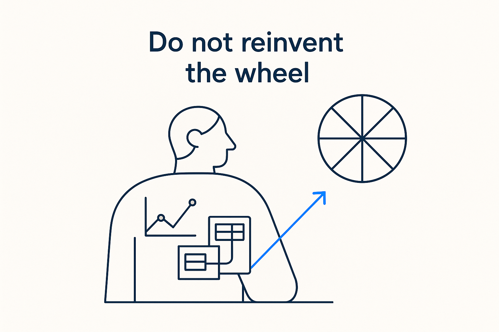

The new way of modeling stands on the shoulders of giants — distil the essentials from decades of data-modeling work and keep what works, rather than starting from scratch.

> The new way of modeling stands on the shoulders of giants — distil the essentials from decades of data-modeling work and keep what works, rather than starting from scratch.
Breakthrough Modeling is new, but it is not a blank page. It stands on the shoulders of giants. Decades of hard-won thinking already exist — Data Vault, Kimball and dimensional modeling, Inmon, the Unified Star Schema, universal data models, Alec Sharp’s business-oriented data modeling, FCO-IM, ensemble modeling — and throwing that away to feel original would be its own kind of waste. The people who built these methods solved real problems; the answers are in the literature.
So the discipline is to distil the essentials and keep what works. Not adopt one school wholesale, and not reject them because they predate AI — but read across them, take the parts that still hold, and leave the parts the world moved past. Data Vault’s separation of keys and change, Kimball’s grain discipline, FCO-IM’s fact-oriented verbalization, Sharp’s insistence that the business can see itself in the model — these are wheels already built. Reuse them.
What is genuinely new is the combination and the medium: those essentials expressed as structured, AI-readable metadata, unified across structure, movement and meaning. Don’t reinvent the wheel — put the good wheels on a new vehicle. Originality is in the synthesis, not in pretending the past didn’t happen.
Where it lives: the signature principle of Breakthrough Modeling — built on the giants, not instead of them.